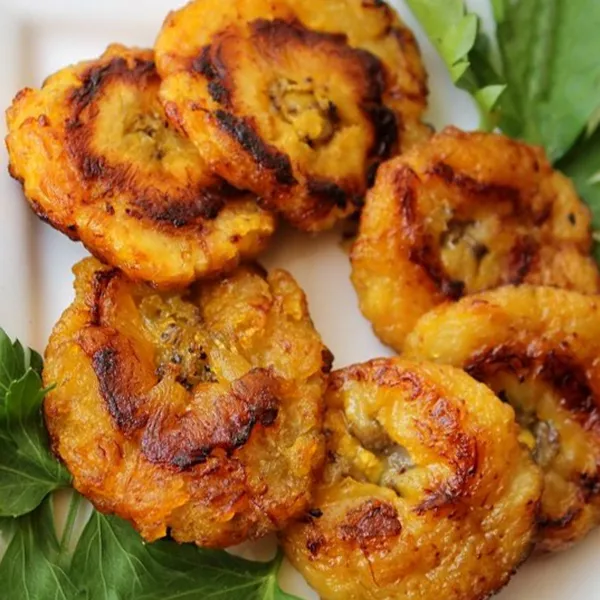

Tostones

Photo by Melissa Goff
Tostones are crispy, savory fried green plantains. They work well as a side to many Latin dishes, including arroz con gandules.
Ingredients
- 1 green plantain
- 5 tbsp. oil for frying
- 3 cups cold water
- salt to taste
- garlic powder to taste (optional)
Steps
- Peel plantain
- Cut plantain into 1 inch (2½ cm) slices
- Fill bowl with 3 cups of cold water
- Heat oil in a large, deep pan or skillet over medium-high heat
- Add plantain slices in an even layer and fry on both sides until golden and crispy (about 3½ minutes per side)
- Set the pan or skillet aside (You will be using it again shortly, so don't drain the oil)
- Place the plantains on a cutting board
- Flatten each plantain by pressing down on them with a plate or spatula (You can even use a gloved hand, if it comes to that)
- Dip plantains in cold water
- Reheat oil over medium heat
- Cook plantains for 1 minute on each side
- Add salt and garlic powder (optional) to taste
- Serve immediately, as they tend to cool off quickly
Recipe by Lymari on allrecipes.com